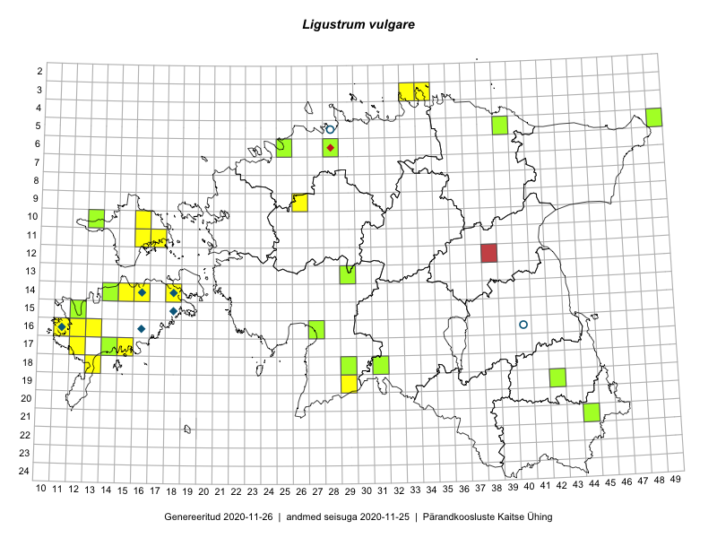

Ligustrum vulgare — harilik liguster
Kaardile koondatud taksonid: Ligustrum vulgare L. (47)

Kaart põhineb 47 kirjel, neist:
vaatlusi 33
eksemplare 14
Kaasaegsed1 leiukohad asuvad 27 ruudus.
Andmed “Eesti taimede levikuatlasest”,2 sulgudes ruutude arv:3
● 1971–2005 (6)
○ 1921–1970 (0)
△ kuni 1920 (0)
+ hävinud (0)
? kaheldav (0)
Lisaruudud teistest andmebaasidest:4
ELF: 2006– . . . (0)
PKÜ: 2006– . . . (0)
ELF: 1971–2005 (0)
PKÜ: 1997–2005 (0)
| Ruut | Vaatleja(d) | Vaatlusaeg | Kirje PlutoFis |
|---|---|---|---|
| 19-29 | Peedu Saar, Liina Oja | 2015-05-22 | ruut/ala: Ligustrum vulgare L. |
| 17-14 | Toomas Kukk, Peedu Saar, Kersti Tambets, Sten Mander, Janika Sammasto | 2015-08-05 | ruut/ala: Ligustrum vulgare L. |
| 05-49 | Tiit Hallikma, Toomas Kukk | 2015-07-22 | ruut/ala: Ligustrum vulgare L. |
| 15-12 | Mari Reitalu, Oliver Parrest | 2015-07-14 | ruut/ala: Ligustrum vulgare L. |
| 16-13 | Mari Reitalu, Oliver Parrest | 2015-05-22 | ruut/ala: Ligustrum vulgare L. |
| 16-13 | Mari Reitalu, Oliver Parrest | 2015-07-27 | ruut/ala: Ligustrum vulgare L. |
| 16-11 | Triin Reitalu, Mari Reitalu | 2015-08-09 | ruut/ala: Ligustrum vulgare L. |
| 05-39 | Kaili Orav, Silvia Pihu | 2015-06-19 | ruut/ala: Ligustrum vulgare L. |
| 09-26 | Thea Kull, Meeli Mesipuu, Eerik Leibak | 2014-06-11 | ruut/ala: Ligustrum vulgare L. |
| 16-11 | Mari Reitalu, Triin Reitalu | 2015-08-09 | ruut/ala: Ligustrum vulgare L. |
| 14-15 | Mari Reitalu, Sirje Azarov | 2016-08-09 | ruut/ala: Ligustrum vulgare L. |
| 14-18 | Mari Reitalu, Sirje Azarov | 2016-08-09 | ruut/ala: Ligustrum vulgare L. |
| 14-18 | Mari Reitalu | 2008-08-28 | ruut/ala: Ligustrum vulgare L. |
| 11-17 | Toomas Kukk, Indrek Tammekänd | 2017-09-11 | ruut/ala: Ligustrum vulgare L. |
| 19-29 | Peedu Saar, Liina Oja | 2015-05-22 | punkt: Ligustrum vulgare L. |
| 17-14 | Toomas Kukk, Peedu Saar | 2015-08-05 | punkt: Ligustrum vulgare L. |
| 03-34 | Rein Kalamees, Kersti Püssa | 2015-06-02 | punkt: Ligustrum vulgare L. |
| 13-29 | Liina Oja, Ott Luuk | 2015-05-09 | punkt: Ligustrum vulgare L. |
| 16-11 | Triin Reitalu, Mari Reitalu | 2015-08-10 | punkt: Ligustrum vulgare L. |
| 15-12 | Mari Reitalu, Oliver Parrest | 2015-07-14 | punkt: Ligustrum vulgare L. |
| 16-13 | Mari Reitalu, Oliver Parrest | 2015-05-22 | punkt: Ligustrum vulgare L. |
| 05-39 | Kaili Orav, Silvia Pihu | 2015-06-19 | punkt: Ligustrum vulgare L. |
| 14-15 | Sirje Azarov, Mari Reitalu | 2016-08-09 | punkt: Ligustrum vulgare L. |
| 14-18 | Sirje Azarov, Mari Reitalu | 2016-08-10 | punkt: Ligustrum vulgare L. |
| 16-12 | Mari Reitalu, Triin Reitalu | 2016-07-01 | punkt: Ligustrum vulgare L. |
| 11-17 | Toomas Kukk, Indrek Tammekänd | 2017-09-11 | punkt: Ligustrum vulgare L. |
| 18-13 | Rein Kalamees | 2017-07-21 | punkt: Ligustrum vulgare L. |
| 16-11 | Mari Reitalu, Triin Reitalu | 2019-04-21 | punkt: Ligustrum vulgare L. |
| 17-15 | Mari Reitalu, Sirje Azarov | 2019-04-23 | ruut/ala: Ligustrum vulgare L. |
| 17-15 | Sirje Azarov, Mari Reitalu | 2019-04-23 | punkt: Ligustrum vulgare L. |
| 17-12 | Mari Reitalu | 2019-05-10 | punkt: Ligustrum vulgare L. |
| 10-16 | Kalevi Kull | 2019-08-01 | punkt: Ligustrum vulgare L. |
| 03-33 | Rein Kalamees | 2019-07-14 | punkt: Ligustrum vulgare L. |
| 06-25 | J.-M. Habicht | 2008-07-09 | TAM0014586: Ligustrum vulgare L. |
| 06-25 | J.-M. Habicht | 2008-07-09 | TAM0014587: Ligustrum vulgare L. |
| 05-49 | Toomas Kukk, Tiit Hallikma | 2015-07-22 | TAA0135078: Ligustrum vulgare L. |
| 05-39 | Kaili Orav, Silvia Pihu | 2015-06-19 | TAA0135419: Ligustrum vulgare L. |
| 17-14 | Toomas Kukk, Sten Mander, Kersti Tambets, Peedu Saar | 2015-08-05 | TAA0135559: Ligustrum vulgare L. |
| 15-12 | Toomas Kukk | 2012-08-22 | TAA0112347: Ligustrum vulgare L. |
| 14-14 | Toomas Kukk | 2012-07-13 | TAA0112569: Ligustrum vulgare L. |
| 10-13 | Sander Laherand, Nele Jõessar, Maret Gerz | 2016-08-10 | TAA0135791: Ligustrum vulgare L. |
| 19-42 | Ott Luuk | 2016-06-17 | TAA0138899: Ligustrum vulgare L. |
| 18-29 | Indrek Tammekänd | 2017-07-05 | TAA0143333: Ligustrum vulgare L. |
| 16-27 | Indrek Tammekänd | 2017-07-27 | TAA0143399: Ligustrum vulgare L. |
| 18-31 | Ott Luuk, Indrek Tammekänd | 2015-05-22 | TAA0144850: Ligustrum vulgare L. |
| 13-29 | Ott Luuk, Liina Oja | 2015-05-09 | TAA0147290: Ligustrum vulgare L. |
| 21-44 | Indrek Tammekänd | 2018-07-28 | TAA0147807: Ligustrum vulgare L. |
Kaasaegsed leiukohad (tähistatud värvitud ruutudega) põhinevad peamiselt 2014–2019 välitööandmetel. Väiksemal määral on andmebaasi kantud vanemaid leiuandmeid aastatest 2006–2013.↩︎
Kukk, T., Kull, T., Eesti taimede levikuatlas. Eesti Maaülikool, Põllumajandus- ja Keskkonnainstituut, Tartu, 2005.↩︎
NB! 2005. aasta atlase andmestikus katavad uuemad leiud vanemaid. Näiteks kui liik on ruudus registreeritud 1971–2005, siis pole võimalik öelda, kas ta oli sellest ruudust teada ka enne 1970. aastat. Vana atlase andmetel hävinud ja kaheldavaid leiukohti pole hilisemate (taas)leidude põhjal korrigeeritud.↩︎
Eestimaa Looduse Fondi (ELF) ja Pärandkoosluste Kaitse Ühingu (PKÜ) andmebaasid sisaldavad inventeeritud koosluste kirjeldusi ja liigiloendeid. Neist andmekogudest on kaardile lisatud lisatud vaid need ruudud, millest uue atlase andmekogus taksoni kohta kirjeid veel pole. Kõrvale on jäetud teadaolevalt kaheldavad määrangud. Kaartidel katavad uuema perioodi andmed vanemaid, PKÜ omad ELFi omi. Kattumise tõttu võib kaardil näha olla vähem mingi kategooria ruute kui legendis olev arv näitab. ELFi ja PKÜ andmed ei kajastu hetkel vaatluste tabelis ega ruutude liigiloendites.↩︎